class: title-slide count: false .logo-title[] ## ELECTENG 209 # Embedded Software Design ### Digital Signal Processing .TitleAuthor[Duleepa J Thrimawithana] --- layout: true name: template_slide .logo-slide[] .footer[[Duleepa J Thrimawithana](https://www.linkedin.com/in/duleepajt), Department of Electrical, Computer and Software Engineering (2020)] --- name: S1a # Learning Objectives - How do the ADC samples of the voltage and current waveforms relate to the analog signals? - What do we need to be aware of when extracting information from sampled waveforms? - How can we calculate the peak value of a sampled waveform? - Using digital signal processing techniques - Using analog peak detector circuitry to aid digital processing - How can we calculate the RMS value of a sampled waveform? - Approximating the RMS using peak value of a sinusoidal waveforms - Using Riemann sum to evaluate the RMS formula - How can we calculate the power factor angle? - Using output of the zero crossing detectors to approximate power factor angle - How can we calculate power delivered to the load? - Approximating power using RMSs and power factor angle - Using Riemann sum to evaluate the power formula --- name: S1b # Lecture Quiz - The lecture quiz is now available on Canvas - Quiz is available for 3 days and allows 3 attempts - Best of the 3 attempts taken as the final score --- class: title-slide layout: false count: false .logo-title[] # Digital Representation of Voltage and Current ### Understanding the Relation to Real Signals --- layout: true name: template_slide .logo-slide[] .footer[[Duleepa J Thrimawithana](https://www.linkedin.com/in/duleepajt), Department of Electrical, Computer and Software Engineering (2020)] --- name: S2 # The Voltage Measurement .center[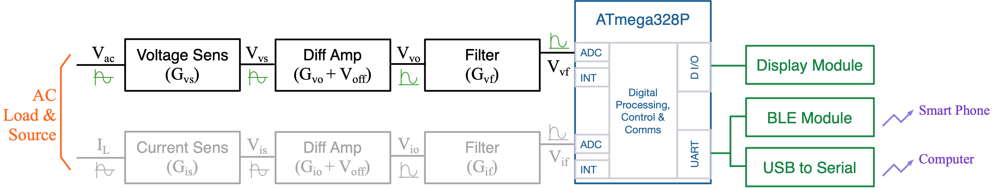] - The step down in voltage achieved by the voltage divider can be quantified by a gain G<sub>vs</sub> - In your design G<sub>vs</sub> = R<sub>b</sub> / (R<sub>a</sub> + R<sub>b</sub> ) - The differential amplifier provide a gain G<sub>vo</sub> and an offset V<sub>off</sub> - In your design G<sub>vo</sub> = R<sub>2</sub> / R<sub>1</sub> - The gain of the passive RC filter, G<sub>vf</sub>, is 1 in your design - The analog signal at the ADC, V<sub>vf</sub>, is therefore \\[ V\_\text{vf} = G\_\text{vs} G\_\text{vo} V\_\text{AC} + V\_\text{off} \\] --- name: S3 # The Current Measurement .center[<img src="img/CurrentCct.png" height="150">] - The relation with I<sub>L</sub> and V<sub>is</sub> can be quantified by a gain G<sub>is</sub> - In your design G<sub>is</sub> = R<sub>s</sub> - The differential amplifier provide a gain G<sub>io</sub> and an offset V<sub>off</sub> - In your design G<sub>io</sub> = R<sub>2</sub> / R<sub>1</sub> - The gain of the passive RC filter, G<sub>if</sub>, is 1 in your design - The analog signal at the ADC, V<sub>if</sub>, is therefore \\[ V\_\text{if} = G\_\text{is} G\_\text{io} I\_\text{L} + V\_\text{off} \\] --- name: S4 # ADC Data Representing Voltage .center[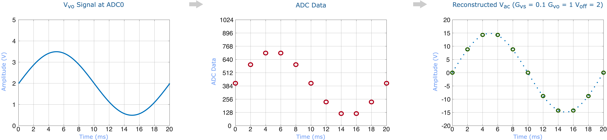] - In this lecture, lets assume a 50Hz V<sub>vf</sub> at ADC0 is sampled and converted to an ADC value every 2ms - Note that project specifications limits maximum sampling rate to 10kHz and therefore if repeatedly a sample of V<sub>vf</sub> is taken followed by a sample of V<sub>if</sub> then each V<sub>vf</sub> sample will be 0.2ms apart - Alternatively V<sub>vf</sub> can be continuously sampled over a few periods to take samples of V<sub>vf</sub> every 0.1ms - Need zero crossing detector to correctly align the V<sub>if</sub> samples taken after this with the V<sub>vf</sub> samples - From the ADC data we can estimate the AC source voltage at i<sup>th</sup> sample point since \\[ V\_\text{AC}[i] = \tfrac {\mathtt{ADC0Value}[i] \times \frac{5}{1024} - V\_\text{off}} {G\_\text{vs} G\_\text{vo}} \\] --- name: S5 # ADC Data Representing Current .center[] - Similar to V<sub>vf</sub> lets assume a 50Hz V<sub>if</sub> at ADC1 is sampled and converted to an ADC value every 2ms - Project specifications limits maximum sampling rate to 10kHz and therefore if repeatedly a sample of V<sub>vf</sub> is taken followed by a sample of V<sub>if</sub> then each V<sub>if</sub> sample will be 0.2ms apart - Alternatively V<sub>if</sub> can be continuously sampled over a few periods to take samples of V<sub>if</sub> every 0.1ms - Need zero crossing detector to correctly align the V<sub>if</sub> samples with the V<sub>vf</sub> samples - From the ADC data we can estimate the AC load current at i<sup>th</sup> sample point since \\[ I\_\text{L}[i] = \tfrac {\mathtt{ADC1Value}[i] \times \frac{5}{1024} - V\_\text{off}} {G\_\text{is} G\_\text{io}} \\] --- name: S6 # Voltage & Current Samples .center[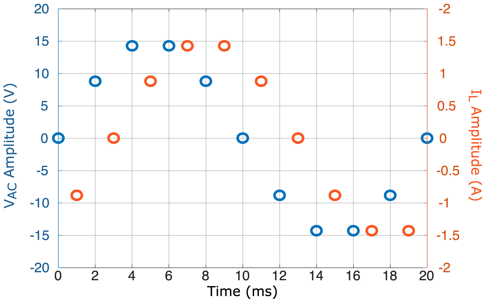] - When repeatedly a sample of V<sub>vf</sub> is taken followed by a sample of V<sub>if</sub> these samples will be 1ms apart - This delay can introduce a *perceived* phase-shift (i.e. phase error) - With good signal processing techniques this error can be minimized - During the project you are encouraged to investigate and improve on the techniques taught in this lecture --- class: title-slide layout: false count: false .logo-title[] # Peak Current/Voltage ### Techniques to Obtain the Peak of a Signal --- layout: true name: template_slide .logo-slide[] .footer[[Duleepa J Thrimawithana](https://www.linkedin.com/in/duleepajt), Department of Electrical, Computer and Software Engineering (2020)] --- name: S7 # Finding Max of ADC Samples .center[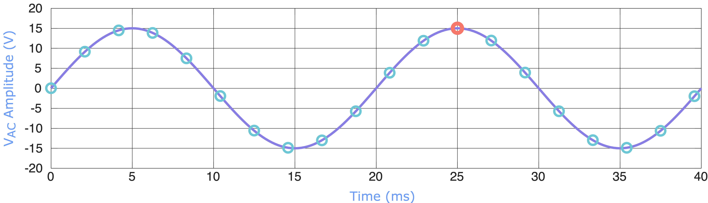] - With a limited sampling rate and without a method to synchronize the sampling to align with a peak we cannot measure the peak accurately by sampling just one cycle of the signal - Notice in example above, that while during the first cycle the ADC data does not capture the peak, during the second cycle it does - The signal can be sampled over a large number of cycles to capture the peak as long as sampling frequency is not an integer multiplication of the signal frequency - This process takes time --- name: S8 # Using a Peak Detector Circuit .center[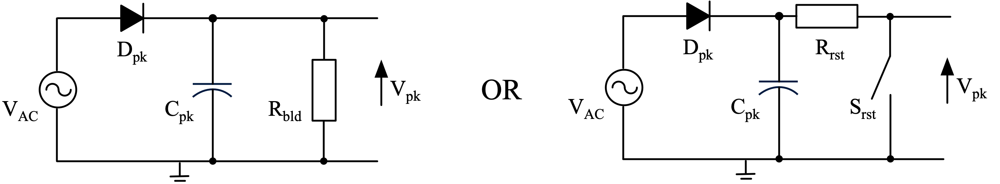] - A dedicated peak detector circuit could be used to detect the peak - A diode and a capacitor can be used to sample the peak - Works like a half-wave rectifier - A resistor, R<sub>bld</sub>, is needed to bleed the charge in C<sub>pk</sub> so a peak value that changes over time can be monitored (the RC time constant needs to be larger than the period of the signal) - Alternatively, a switch, S<sub>rst</sub>, can be used to reset the peak detector by discharging C<sub>pk</sub> regularly through a resistor, R<sub>rst</sub> - The forward voltage drop across diode significantly impacts the accuracy --- name: S9 # An Improved Peak Detector Circuit .center[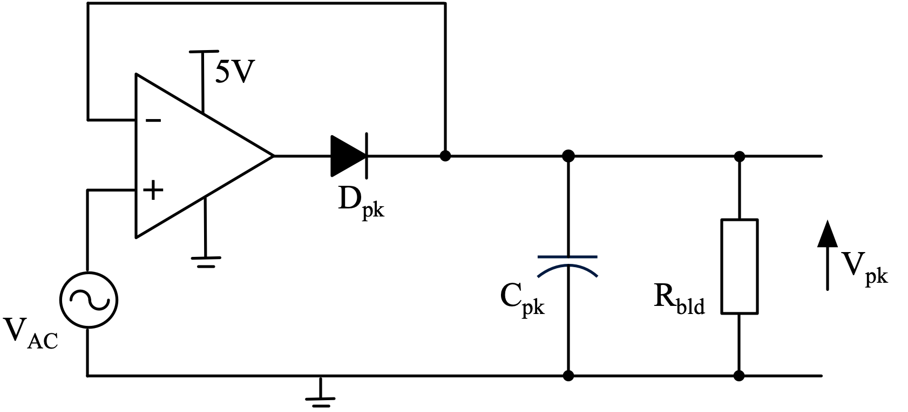] - To overcome the forward voltage drop of the diode a *superdiode* can be used - When V<sub>AC</sub> is greater than V<sub>pk</sub>, the op-amp forward biases the diode completing negative feedback loop - Op-amp acts as a follower and C<sub>pk</sub> charges to peak value of V<sub>AC</sub> - The maximum peak value that can be tracked is equal to V<sub>OH</sub> - V<sub>F</sub>, where V<sub>F</sub> is the forward voltage drop of the diode - A mechanism to discharge C<sub>pk</sub> is still required so a peak value that changes over time can be monitored --- class: title-slide layout: false count: false .logo-title[] # RMS Current/Voltage ### Techniques to Obtain the RMS of a Signal --- layout: true name: template_slide .logo-slide[] .footer[[Duleepa J Thrimawithana](https://www.linkedin.com/in/duleepajt), Department of Electrical, Computer and Software Engineering (2020)] --- name: S10 # Estimating RMS Using Peak - [Recall](#S7) that we have already learnt how to obtain the peak of a signal - Assuming this signal is sinusoidal, the peak value is related to the RMS value as given by \\[ \text{RMS} = \frac {\text{Peak}} {\sqrt{2}} \\] - The assumption of a sinusoidal signal is not always correct, especially in a practical design, as V<sub>ac</sub> and I<sub>L</sub> are often distorted sinusoidal signals - The distortions in the signals lead to significant errors in the RMS estimate when using this method - We can improve the accuracy by developing software to implement the RMS formula given by \\[ V\_\text{AC(RMS)} = \sqrt {\frac {1} {T\_\text{p}} \int\_{0}^{T\_\text{p}} {V\_\text{AC}^2 \,dt}} \quad \text{or} \quad I\_\text{L(RMS)} = \sqrt {\frac {1} {T\_\text{p}} \int\_{0}^{T\_\text{p}} {I\_\text{L}^2 \,dt}}\\] --- name: S11 # Riemann Sum - RMS formula can be converted in to a form that can be evaluated in an MCU by applying it to ADC data - The integral term in the RMS formula can be evaluated in an MCU using the Riemann sum - The area under a curve is divided in to a number of rectangles where the height of these rectangles are evaluated using the ADC data of the signal - The width of each rectangle is equal to time between 2 ADC samples of the signal Δt<sub>sample</sub> - By adding the areas of each rectangle we can evaluate the integral - Trapezoidal rule and a number of other more advanced methods can also be used .center[<img src="img/Riemann_sum_(leftbox).gif" height="150"> <img src="img/Riemann_sum_(middlebox).gif" height="150"> <img src="img/Riemann_sum_(rightbox).gif" height="150"> .credits[ Riemann Sum [[1]](https://en.wikipedia.org/wiki/Riemann_sum) ] ] --- name: S12 # Calculating the RMS Numerically .center[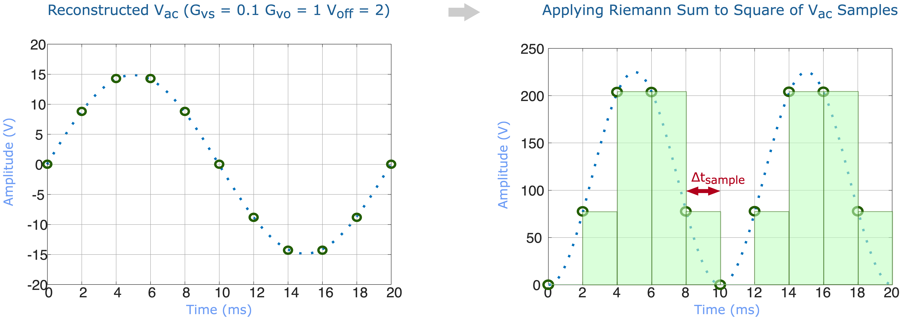] - If we have taken N ADC samples at regular Δt<sub>sample</sub> intervals over one time period of the signal, the time period T<sub>p</sub> = NΔt<sub>sample</sub> - We can square each V<sub>AC</sub> or I<sub>L</sub> sample and use Riemann sum to numerically evaluate the RMS as given by \\[ V\_\text{AC(RMS)}^2 = \frac {1}{N \Delta t\_\text{sample}} \sum\_{i=0}^{N-1} V\_\text{AC}^2[i] \cdot \Delta t\_\text{sample} \quad \text{or} \quad I\_\text{L(RMS)}^2 = \frac {1}{N \Delta t\_\text{sample}} \sum\_{i=0}^{N-1} I\_\text{L}^2[i] \cdot \Delta t\_\text{sample}\\] --- class: title-slide layout: false count: false .logo-title[] # Power Factor ### Techniques to Obtain the Power Factor Angle --- layout: true name: template_slide .logo-slide[] .footer[[Duleepa J Thrimawithana](https://www.linkedin.com/in/duleepajt), Department of Electrical, Computer and Software Engineering (2020)] --- name: S13 # Time Between Zero Crossings .center[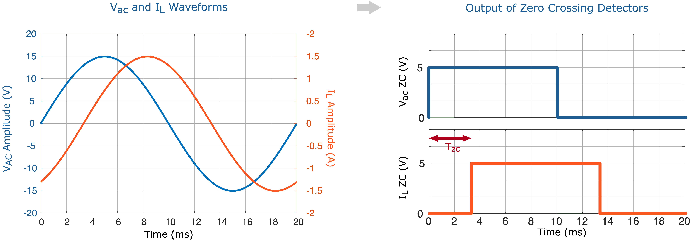] - Because of the limited sampling frequency, using ADC data to calculate the time between voltage and current zero-crossings introduces significant error - Comparators can be used to detect the zero-crossings and generate rising or falling edge signals - To avoid noise from generating false edges, filtered signals should be fed to the comparators - The edges can be used as interrupts to control a timer to obtain the time, T<sub>zc</sub>, between edges - We can estimate power factor angle, θ, by looking at the time between the zero-crossings of the voltage and current waveforms since θ = 360<sup>0</sup> T<sub>zc</sub> / T<sub>p</sub> --- class: title-slide layout: false count: false .logo-title[] # Power ### Techniques to Obtain the Real Power --- layout: true name: template_slide .logo-slide[] .footer[[Duleepa J Thrimawithana](https://www.linkedin.com/in/duleepajt), Department of Electrical, Computer and Software Engineering (2020)] --- name: S14 # Estimating Power Using RMSs - [Recall](#S10) that we have already learnt how to obtain the RMS of V<sub>AC</sub> and I<sub>L</sub> - Assuming V<sub>AC</sub> and I<sub>L</sub> are sinusoidal, the power is related to their RMS values and the power factor angle as given by \\[ P = V\_\text{AC(RMS)} I\_\text{L(RMS)} \cos(\theta) \\] - The assumption of a sinusoidal signal is not always correct, especially in a practical design, as V<sub>ac</sub> and I<sub>L</sub> are often distorted sinusoidal signals - The distortions in the signals lead to significant errors in the power estimate when using RMSs and the power factor angle - We can improve the accuracy by developing software to implement the power formula given by \\[ P = \frac {1} {T\_\text{p}} \int\_{0}^{T\_\text{p}} {V\_\text{AC} I\_\text{L} \,dt} \\] --- name: S15 # Calculating Power Numerically .left-column[ - Assume we have taken N ADC samples of both V<sub>AC</sub> and I<sub>L</sub> - Samples of V<sub>AC</sub> as well as I<sub>L</sub> are at regular Δt<sub>sample</sub> intervals - We can multiply each V<sub>AC</sub> sample with corresponding I<sub>L</sub> sample to numerically evaluate power as given by \\[ P = \frac {1}{N \Delta t\_\text{sample}} \sum\_{i=0}^{N-1} \left( V\_\text{AC}[i] \cdot I\_\text{L}[i] \cdot \Delta t\_\text{sample} \right) = \frac {1}{N} \sum\_{i=0}^{N-1} \left( V\_\text{AC}[i]\cdot I\_\text{L}[i] \right)\\] - Since the two ADC channels are sampled one after the other, there is a time delay between each sample of V<sub>AC</sub> and its corresponding I<sub>L</sub> sample - This can lead to a significant error in power calculation in the form of a phase-shift ] .right-column[ .center[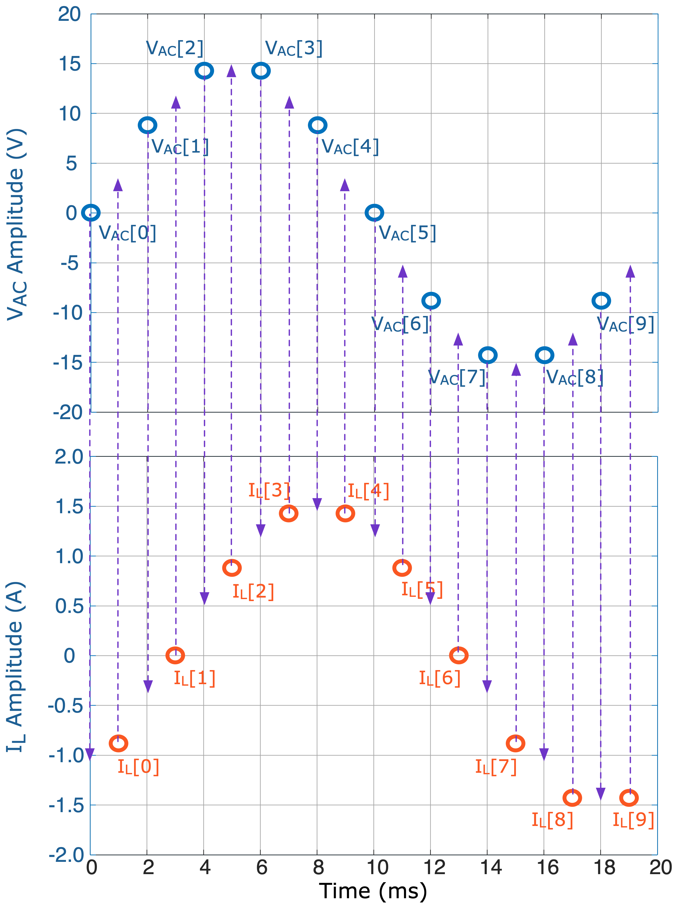] ] --- name: S16 # Linear Approximation of Missing Data .left-column[ - The missing V<sub>AC</sub> and I<sub>L</sub> samples can be approximated using the average of the samples from either side (i.e. linear approximation) \\[ \bar{V}\_\text{AC}[i] = \frac {V\_\text{AC}[i] + V\_\text{AC}[i+1]} {2} \\] \\[ \bar{I}\_\text{L}[i] = \frac {I\_\text{L}[i-1] + I\_\text{L}[i]} {2} \\] - How can we estimate the 11<sup>th</sup> sample of V<sub>AC</sub> and the -1<sup>th</sup> sample of I<sub>L</sub>? - Power can now be evaluated as given by \\[ P = \frac {1}{2N} \sum\_{i=0}^{N-1} \left[ V\_\text{AC}[i] \cdot \bar{I}\_\text{L}[i] + \bar{V}\_\text{AC}[i] \cdot I\_\text{L}[i] \right] \\] ] .right-column[ .center[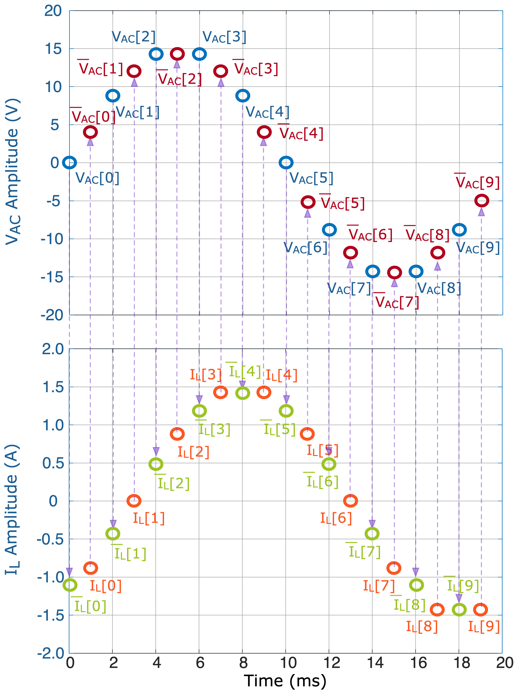] ] --- name: S17 # The Power Calculation - Once the missing samples are approximated, Riemann sum can be used to evaluate power - Can we improve the calculation accuracy? - In the project using Excel/Matlab/Repl.it validate your power calculation algorithm - Operate on V<sub>AC</sub> and I<sub>L</sub> ADC samples collected from the MCU .center[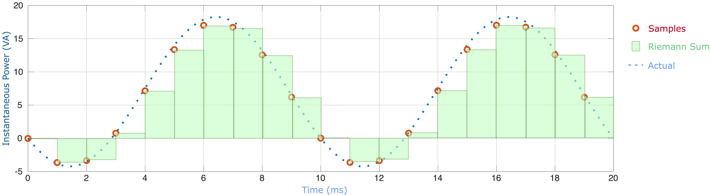] --- name: S18 # Demo: Power Calculation <iframe height="400px" width="100%" src="https://replit.com/@duleepajt/EE209Power?lite=true" scrolling="no" frameborder="no" allowtransparency="true" allowfullscreen="true" sandbox="allow-forms allow-pointer-lock allow-popups allow-same-origin allow-scripts allow-modals"></iframe>